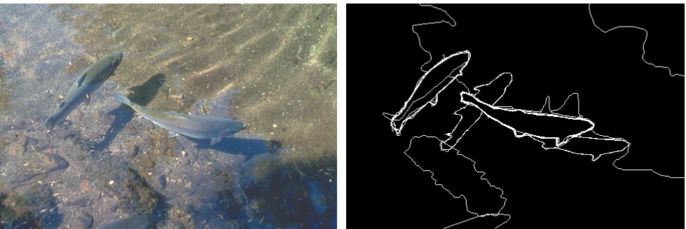
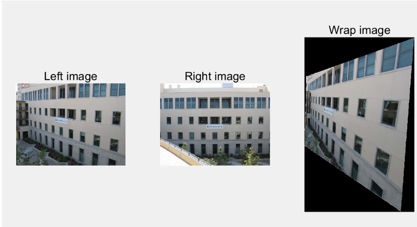
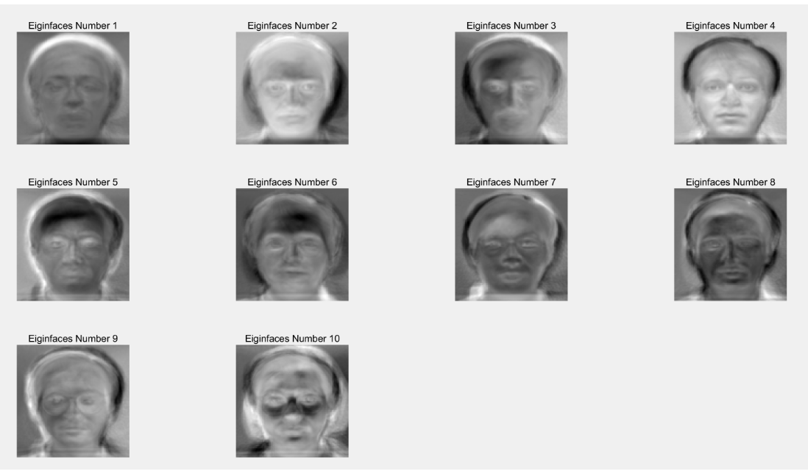
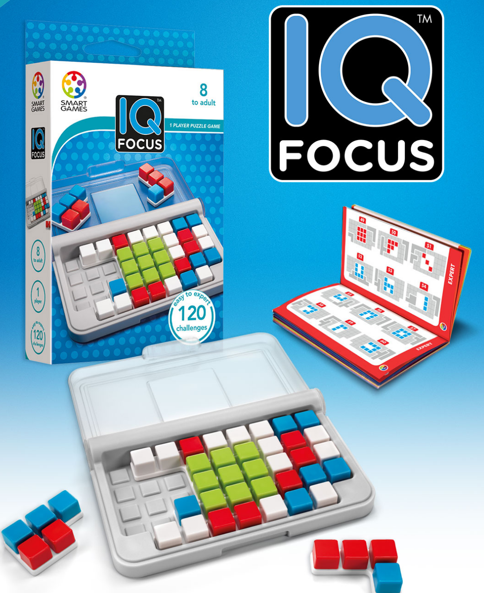

Profile
- I am a second-year undergraduate student in ANU working on computer vision.
- At the beginning, I was born in Chengdu,Sichuan. It's famous for its spicy hot pot and pandas.
- If you have any projects related to computer vision, please contact me. I'm always willing to get involved in.
Research Interest
The focal point of my research is computer vision, I have a broad interest in computer vision. At this stage,
I am especially interested in exploring low-level vision, GAN and its applications and language+vision task. I'm also interested in robotics though I haven't studied robotics yet.
I'm currently working on
- Image restoration and enhancement for images captured in adverse weather and special circumstances(More specifically, underwater image)
- Visual Question Answering (VQA)
at
CSIRO,
Data61 with Dr.Shoeiby Mehrdad, Dr Ali Armin and lots of wonderful academics from CSIRO&ANU.
Education
- 2019.2-2022.12 B.S. Advanced computing(honors) in College of Engineering and Computer Science, ANU.
- Coursework in ANU: Computer Vision(7.0/7.0), Discrete Mathematical Models(7.0/7.0), Programming as Problem Solving (7.0/7.0), Statistical Techniques(7.0/7.0), Information Theory (6.0/7.0).
- Public online courses/materials: CS231N:Convolutional Neural Networks for Visual Recognition(Stanford University), CS131:Computer Vision: Foundations and Applications(Stanford University), CS231A: Computer Vision, From 3D Reconstruction to Recognition.(Stanford Univeristy).
Publications
Projects
Some projects are quite naive, I will remove them after doing more research-oriented projects.
Please click the image for detailed information and source code.
- Contour detection

- Camera calibration&homography

- Harris corner&K-means segmentation&PCA faces

- IQ-focus game

- Android voting App
Services
Membership:
- IEEE Student Member, 2020-Now
Skills
- Programing Language
Proficient in Java,Matlab.
Familiar with Haskell,Python,R,CSS,Html,Assembly(ARMV7).
- Tools
NumPy,Pytorch,Git,LaTeX.
- Language
English (Fluent), Madarian(Native).